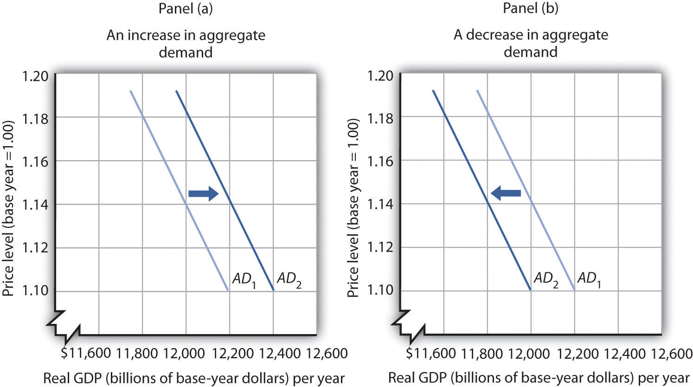
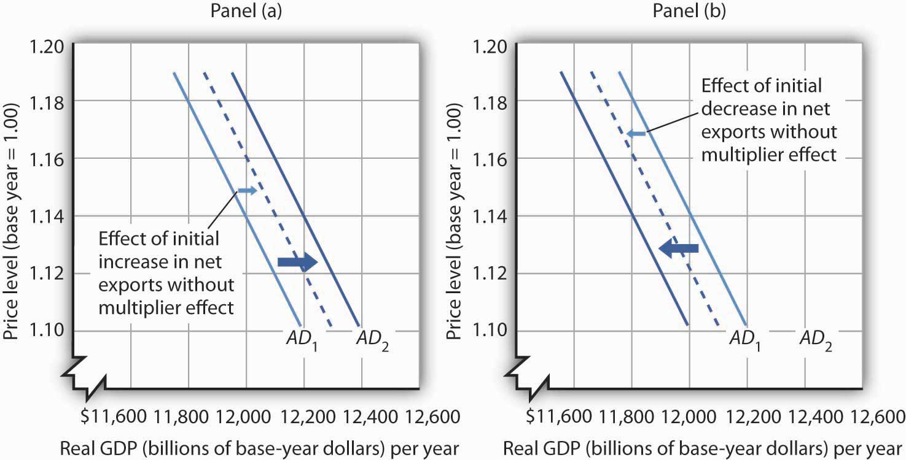
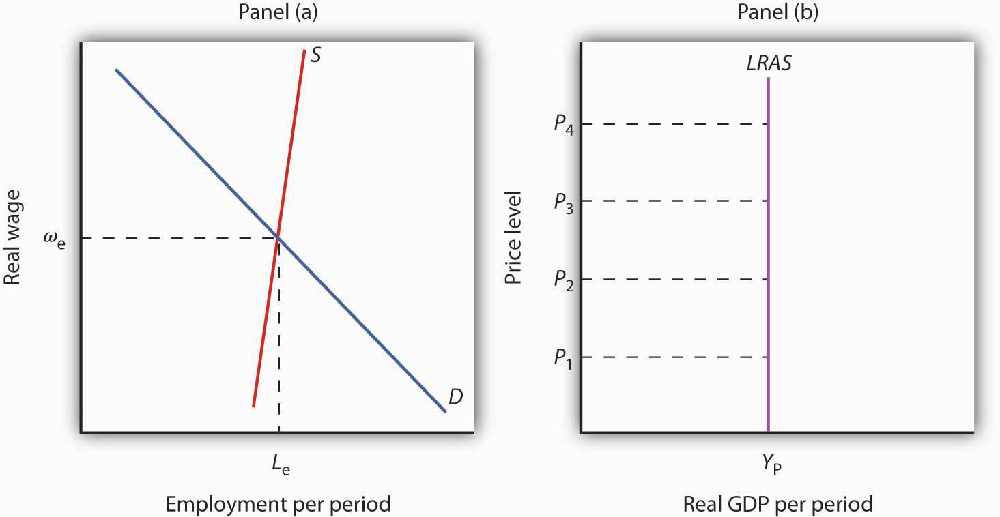
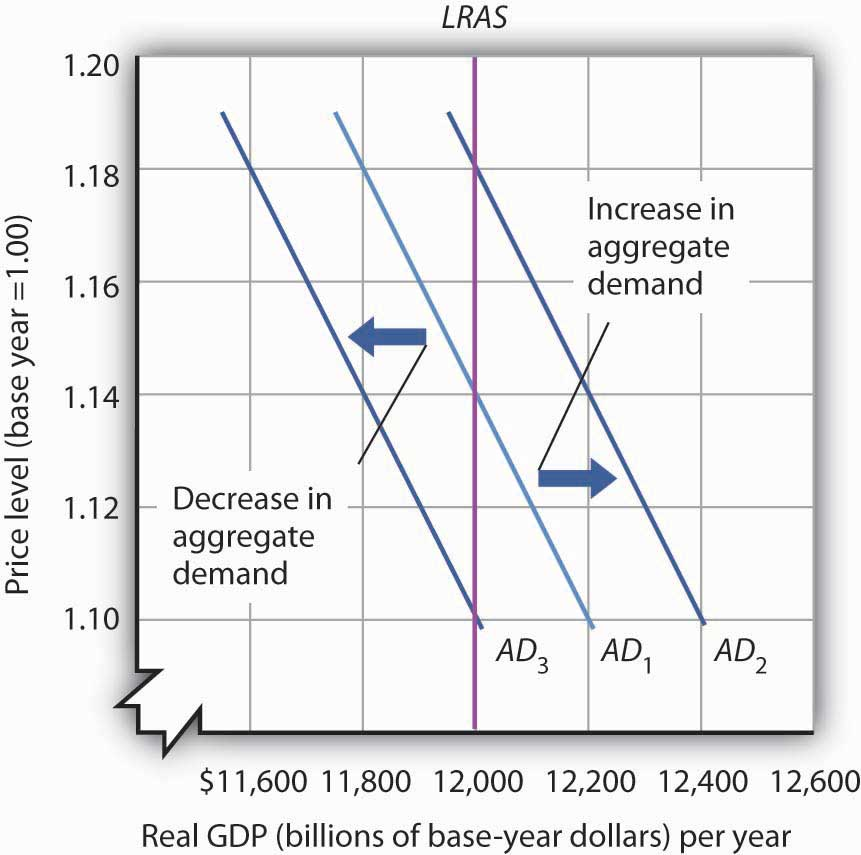
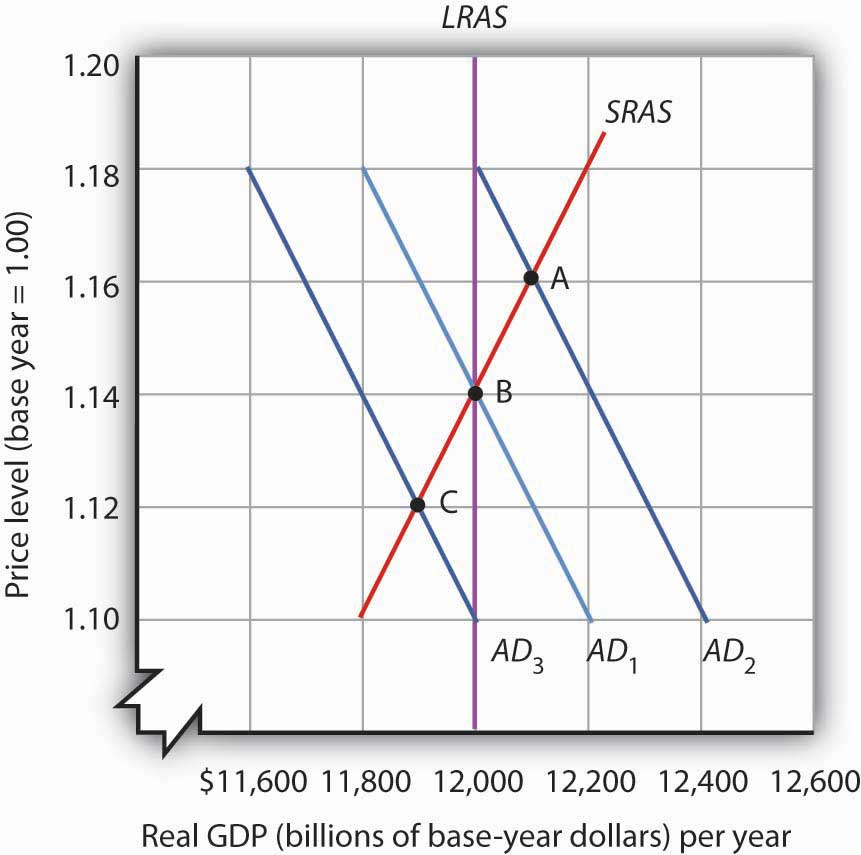
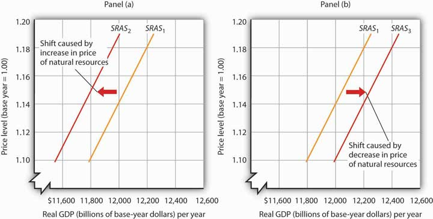
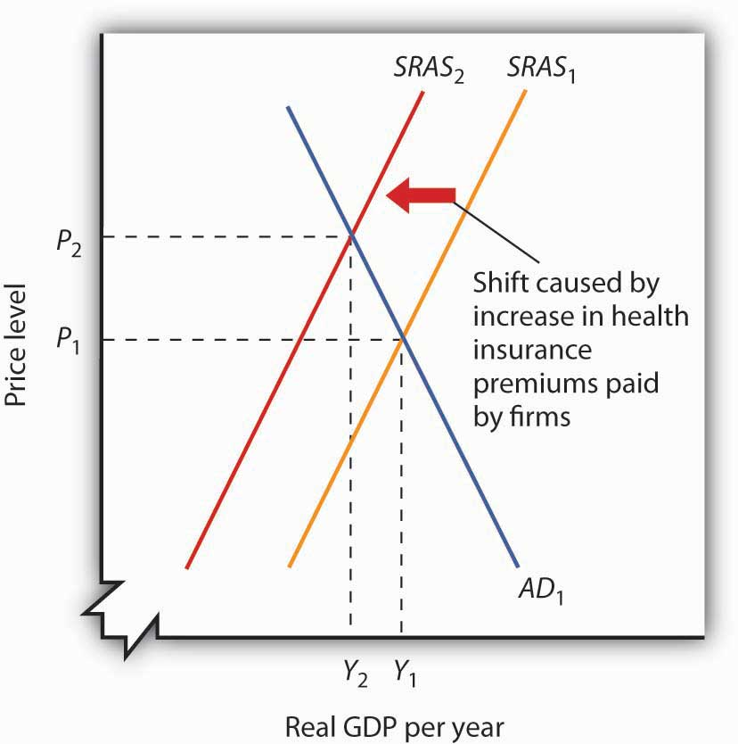
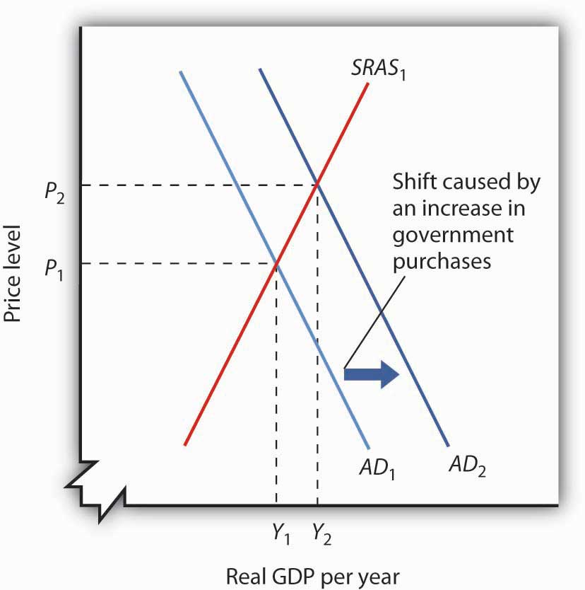

The first warning came from the Harvard Economic Society, an association of Harvard economics professors, early in 1929. The society predicted in its weekly newsletter that the seven-year-old expansion was coming to an end. Recession was ahead. Almost no one took the warning seriously. The economy, fueled by soaring investment, had experienced stunning growth. The 1920s had seen the emergence of many entirely new industries—automobiles, public power, home appliances, synthetic fabrics, radio, and motion pictures. The decade seemed to have acquired a momentum all its own. Prosperity was not about to end, no matter what a few economists might say.
Summer came, and no recession was apparent. The Harvard economists withdrew their forecast. As it turned out, they lost their nerve too soon. Indeed, industrial production had already begun to fall. The worst downturn in our history, the Great Depression, had begun.
The collapse was swift. The stock market crashed in October 1929. Real GDP plunged nearly 10% by 1930. By the time the economy hit bottom in 1933, real GDP had fallen 30%, unemployment had increased from 3.2% in 1929 to 25% in 1933, and prices, measured by the implicit price deflator, had plunged 23% from their 1929 level. The depression held the economy in its cruel grip for more than a decade; it was not until World War II that full employment was restored.
In this chapter we go beyond explanations of the main macroeconomic variables to introduce a model of macroeconomic activity that we can use to analyze problems such as fluctuations in gross domestic product (real GDP), the price level, and employment: the model of aggregate demand and aggregate supply. We will use this model throughout our exploration of macroeconomics. In this chapter we will present the broad outlines of the model; greater detail, more examples, and more thorough explanations will follow in subsequent chapters.
We will examine the concepts of the aggregate demand curve and the short- and long-run aggregate supply curves. We will identify conditions under which an economy achieves an equilibrium level of real GDP that is consistent with full employment of labor. Potential outputThe level of output an economy can achieve when labor is employed at its natural level. is the level of output an economy can achieve when labor is employed at its natural level. Potential output is also called the natural level of real GDP. When an economy fails to produce at its potential, there may be actions that the government or the central bank can take to push the economy toward it, and in this chapter we will begin to consider the pros and cons of doing so.
Firms face four sources of demand: households (personal consumption), other firms (investment), government agencies (government purchases), and foreign markets (net exports). Aggregate demandThe relationship between the total quantity of goods and services demanded (from all the four sources of demand) and the price level, all other determinants of spending unchanged. is the relationship between the total quantity of goods and services demanded (from all the four sources of demand) and the price level, all other determinants of spending unchanged. The aggregate demand curveA graphical representation of aggregate demand. is a graphical representation of aggregate demand.
We will use the implicit price deflator as our measure of the price level; the aggregate quantity of goods and services demanded is measured as real GDP. The table in Figure 22.1 "Aggregate Demand" gives values for each component of aggregate demand at each price level for a hypothetical economy. Various points on the aggregate demand curve are found by adding the values of these components at different price levels. The aggregate demand curve for the data given in the table is plotted on the graph in Figure 22.1 "Aggregate Demand". At point A, at a price level of 1.18, $11,800 billion worth of goods and services will be demanded; at point C, a reduction in the price level to 1.14 increases the quantity of goods and services demanded to $12,000 billion; and at point E, at a price level of 1.10, $12,200 billion will be demanded.
Figure 22.1 Aggregate Demand

An aggregate demand curve (AD) shows the relationship between the total quantity of output demanded (measured as real GDP) and the price level (measured as the implicit price deflator). At each price level, the total quantity of goods and services demanded is the sum of the components of real GDP, as shown in the table. There is a negative relationship between the price level and the total quantity of goods and services demanded, all other things unchanged.
The negative slope of the aggregate demand curve suggests that it behaves in the same manner as an ordinary demand curve. But we cannot apply the reasoning we use to explain downward-sloping demand curves in individual markets to explain the downward-sloping aggregate demand curve. There are two reasons for a negative relationship between price and quantity demanded in individual markets. First, a lower price induces people to substitute more of the good whose price has fallen for other goods, increasing the quantity demanded. Second, the lower price creates a higher real income. This normally increases quantity demanded further.
Neither of these effects is relevant to a change in prices in the aggregate. When we are dealing with the average of all prices—the price level—we can no longer say that a fall in prices will induce a change in relative prices that will lead consumers to buy more of the goods and services whose prices have fallen and less of the goods and services whose prices have not fallen. The price of corn may have fallen, but the prices of wheat, sugar, tractors, steel, and most other goods or services produced in the economy are likely to have fallen as well.
Furthermore, a reduction in the price level means that it is not just the prices consumers pay that are falling. It means the prices people receive—their wages, the rents they may charge as landlords, the interest rates they earn—are likely to be falling as well. A falling price level means that goods and services are cheaper, but incomes are lower, too. There is no reason to expect that a change in real income will boost the quantity of goods and services demanded—indeed, no change in real income would occur. If nominal incomes and prices all fall by 10%, for example, real incomes do not change.
Why, then, does the aggregate demand curve slope downward? One reason for the downward slope of the aggregate demand curve lies in the relationship between real wealth (the stocks, bonds, and other assets that people have accumulated) and consumption (one of the four components of aggregate demand). When the price level falls, the real value of wealth increases—it packs more purchasing power. For example, if the price level falls by 25%, then $10,000 of wealth could purchase more goods and services than it would have if the price level had not fallen. An increase in wealth will induce people to increase their consumption. The consumption component of aggregate demand will thus be greater at lower price levels than at higher price levels. The tendency for a change in the price level to affect real wealth and thus alter consumption is called the wealth effectThe tendency for a change in the price level to affect real wealth and thus alter consumption.; it suggests a negative relationship between the price level and the real value of consumption spending.
A second reason the aggregate demand curve slopes downward lies in the relationship between interest rates and investment. A lower price level lowers the demand for money, because less money is required to buy a given quantity of goods. What economists mean by money demand will be explained in more detail in a later chapter. But, as we learned in studying demand and supply, a reduction in the demand for something, all other things unchanged, lowers its price. In this case, the “something” is money and its price is the interest rate. A lower price level thus reduces interest rates. Lower interest rates make borrowing by firms to build factories or buy equipment and other capital more attractive. A lower interest rate means lower mortgage payments, which tends to increase investment in residential houses. Investment thus rises when the price level falls. The tendency for a change in the price level to affect the interest rate and thus to affect the quantity of investment demanded is called the interest rate effectThe tendency for a change in the price level to affect the interest rate and thus to affect the quantity of investment demanded.. John Maynard Keynes, a British economist whose analysis of the Great Depression and what to do about it led to the birth of modern macroeconomics, emphasized this effect. For this reason, the interest rate effect is sometimes called the Keynes effect.
A third reason for the rise in the total quantity of goods and services demanded as the price level falls can be found in changes in the net export component of aggregate demand. All other things unchanged, a lower price level in an economy reduces the prices of its goods and services relative to foreign-produced goods and services. A lower price level makes that economy’s goods more attractive to foreign buyers, increasing exports. It will also make foreign-produced goods and services less attractive to the economy’s buyers, reducing imports. The result is an increase in net exports. The international trade effectThe tendency for a change in the price level to affect net exports. is the tendency for a change in the price level to affect net exports.
Taken together, then, a fall in the price level means that the quantities of consumption, investment, and net export components of aggregate demand may all rise. Since government purchases are determined through a political process, we assume there is no causal link between the price level and the real volume of government purchases. Therefore, this component of GDP does not contribute to the downward slope of the curve.
In general, a change in the price level, with all other determinants of aggregate demand unchanged, causes a movement along the aggregate demand curve. A movement along an aggregate demand curve is a change in the aggregate quantity of goods and services demandedMovement along an aggregate demand curve.. A movement from point A to point B on the aggregate demand curve in Figure 22.1 "Aggregate Demand" is an example. Such a change is a response to a change in the price level.
Notice that the axes of the aggregate demand curve graph are drawn with a break near the origin to remind us that the plotted values reflect a relatively narrow range of changes in real GDP and the price level. We do not know what might happen if the price level or output for an entire economy approached zero. Such a phenomenon has never been observed.
Aggregate demand changes in response to a change in any of its components. An increase in the total quantity of consumer goods and services demanded at every price level, for example, would shift the aggregate demand curve to the right. A change in the aggregate quantity of goods and services demanded at every price level is a change in aggregate demandChange in the aggregate quantity of goods and services demanded at every price level., which shifts the aggregate demand curve. Increases and decreases in aggregate demand are shown in Figure 22.2 "Changes in Aggregate Demand".
Figure 22.2 Changes in Aggregate Demand
An increase in consumption, investment, government purchases, or net exports shifts the aggregate demand curve AD1 to the right as shown in Panel (a). A reduction in one of the components of aggregate demand shifts the curve to the left, as shown in Panel (b).
What factors might cause the aggregate demand curve to shift? Each of the components of aggregate demand is a possible aggregate demand shifter. We shall look at some of the events that can trigger changes in the components of aggregate demand and thus shift the aggregate demand curve.
Several events could change the quantity of consumption at each price level and thus shift aggregate demand. One determinant of consumption is consumer confidence. If consumers expect good economic conditions and are optimistic about their economic prospects, they are more likely to buy major items such as cars or furniture. The result would be an increase in the real value of consumption at each price level and an increase in aggregate demand. In the second half of the 1990s, sustained economic growth and low unemployment fueled high expectations and consumer optimism. Surveys revealed consumer confidence to be very high. That consumer confidence translated into increased consumption and increased aggregate demand. In contrast, a decrease in consumption would accompany diminished consumer expectations and a decrease in consumer confidence, as happened after the stock market crash of 1929. The same problem has plagued the economies of most Western nations in 2008 as declining consumer confidence has tended to reduce consumption. A survey by the Conference Board in September of 2008 showed that just 13.5% of consumers surveyed expected economic conditions in the United States to improve in the next six months. Similarly pessimistic views prevailed in the previous two months. That contributed to the decline in consumption that occurred in the third quarter of the year.
Another factor that can change consumption and shift aggregate demand is tax policy. A cut in personal income taxes leaves people with more after-tax income, which may induce them to increase their consumption. The federal government in the United States cut taxes in 1964, 1981, 1986, 1997, and 2003; each of those tax cuts tended to increase consumption and aggregate demand at each price level.
In the United States, another government policy aimed at increasing consumption and thus aggregate demand has been the use of rebates in which taxpayers are simply sent checks in hopes that those checks will be used for consumption. Rebates have been used in 1975, 2001, and 2008. In each case the rebate was a one-time payment. Careful studies by economists of the 1975 and 2001 rebates showed little impact on consumption. Final evidence on the impact of the 2008 rebates is not yet in, but early results suggest a similar outcome. In a subsequent chapter, we will investigate arguments about whether temporary increases in income produced by rebates are likely to have a significant impact on consumption.
Transfer payments such as welfare and Social Security also affect the income people have available to spend. At any given price level, an increase in transfer payments raises consumption and aggregate demand, and a reduction lowers consumption and aggregate demand.
Investment is the production of new capital that will be used for future production of goods and services. Firms make investment choices based on what they think they will be producing in the future. The expectations of firms thus play a critical role in determining investment. If firms expect their sales to go up, they are likely to increase their investment so that they can increase production and meet consumer demand. Such an increase in investment raises the aggregate quantity of goods and services demanded at each price level; it increases aggregate demand.
Changes in interest rates also affect investment and thus affect aggregate demand. We must be careful to distinguish such changes from the interest rate effect, which causes a movement along the aggregate demand curve. A change in interest rates that results from a change in the price level affects investment in a way that is already captured in the downward slope of the aggregate demand curve; it causes a movement along the curve. A change in interest rates for some other reason shifts the curve. We examine reasons interest rates might change in another chapter.
Investment can also be affected by tax policy. One provision of the Job and Growth Tax Relief Reconciliation Act of 2003 was a reduction in the tax rate on certain capital gains. Capital gains result when the owner of an asset, such as a house or a factory, sells the asset for more than its purchase price (less any depreciation claimed in earlier years). The lower capital gains tax could stimulate investment, because the owners of such assets know that they will lose less to taxes when they sell those assets, thus making assets subject to the tax more attractive.
Any change in government purchases, all other things unchanged, will affect aggregate demand. An increase in government purchases increases aggregate demand; a decrease in government purchases decreases aggregate demand.
Many economists argued that reductions in defense spending in the wake of the collapse of the Soviet Union in 1991 tended to reduce aggregate demand. Similarly, increased defense spending for the wars in Afghanistan and Iraq increased aggregate demand. Dramatic increases in defense spending to fight World War II accounted in large part for the rapid recovery from the Great Depression.
A change in the value of net exports at each price level shifts the aggregate demand curve. A major determinant of net exports is foreign demand for a country’s goods and services; that demand will vary with foreign incomes. An increase in foreign incomes increases a country’s net exports and aggregate demand; a slump in foreign incomes reduces net exports and aggregate demand. For example, several major U.S. trading partners in Asia suffered recessions in 1997 and 1998. Lower real incomes in those countries reduced U.S. exports and tended to reduce aggregate demand.
Exchange rates also influence net exports, all other things unchanged. A country’s exchange rateThe price of a currency in terms of another currency or currencies. is the price of its currency in terms of another currency or currencies. A rise in the U.S. exchange rate means that it takes more Japanese yen, for example, to purchase one dollar. That also means that U.S. traders get more yen per dollar. Since prices of goods produced in Japan are given in yen and prices of goods produced in the United States are given in dollars, a rise in the U.S. exchange rate increases the price to foreigners for goods and services produced in the United States, thus reducing U.S. exports; it reduces the price of foreign-produced goods and services for U.S. consumers, thus increasing imports to the United States. A higher exchange rate tends to reduce net exports, reducing aggregate demand. A lower exchange rate tends to increase net exports, increasing aggregate demand.
Foreign price levels can affect aggregate demand in the same way as exchange rates. For example, when foreign price levels fall relative to the price level in the United States, U.S. goods and services become relatively more expensive, reducing exports and boosting imports in the United States. Such a reduction in net exports reduces aggregate demand. An increase in foreign prices relative to U.S. prices has the opposite effect.
The trade policies of various countries can also affect net exports. A policy by Japan to increase its imports of goods and services from India, for example, would increase net exports in India.
A change in any component of aggregate demand shifts the aggregate demand curve. Generally, the aggregate demand curve shifts by more than the amount by which the component initially causing it to shift changes.
Suppose that net exports increase due to an increase in foreign incomes. As foreign demand for domestically made products rises, a country’s firms will hire additional workers or perhaps increase the average number of hours that their employees work. In either case, incomes will rise, and higher incomes will lead to an increase in consumption. Taking into account these other increases in the components of aggregate demand, the aggregate demand curve will shift by more than the initial shift caused by the initial increase in net exports.
The multiplierThe ratio of the change in the quantity of real GDP demanded at each price level to the initial change in one or more components of aggregate demand that produced it. is the ratio of the change in the quantity of real GDP demanded at each price level to the initial change in one or more components of aggregate demand that produced it:
Equation 22.1
We use the capital Greek letter delta (Δ) to mean “change in.” In the aggregate demand–aggregate supply model presented in this chapter, it is the number by which we multiply an initial change in aggregate demand to obtain the amount by which the aggregate demand curve shifts as a result of the initial change. In other words, we can use Equation 22.1 to solve for the change in real GDP demanded at each price level:
Equation 22.2
Suppose that the initial increase in net exports is $100 billion and that the initial $100-billion increase generates additional consumption of $100 billion at each price level. In Panel (a) of Figure 22.3 "The Multiplier", the aggregate demand curve shifts to the right by $200 billion—the amount of the initial increase in net exports times the multiplier of 2. We obtained the value for the multiplier in this example by plugging $200 billion (the initial $100-billion increase in net exports plus the $100-billion increase that it generated in consumption) into the numerator of Equation 22.1 and $100 billion into the denominator. Similarly, a decrease in net exports of $100 billion leads to a decrease in aggregate demand of $200 billion at each price level, as shown in Panel (b).
Figure 22.3 The Multiplier
A change in one component of aggregate demand shifts the aggregate demand curve by more than the initial change. In Panel (a), an initial increase of $100 billion of net exports shifts the aggregate demand curve to the right by $200 billion at each price level. In Panel (b), a decrease of net exports of $100 billion shifts the aggregate demand curve to the left by $200 billion. In this example, the multiplier is 2.
Explain the effect of each of the following on the aggregate demand curve for the United States:
Severe Acute Respiratory Syndrome (SARS), an atypical pneumonia-like disease, broke onto the world scene in late 2002. In March 2003, the World Health Organization (WHO) issued its first worldwide alert and a month later its first travel advisory, which recommended that travelers avoid Hong Kong and the southern province of China, Guangdong. Over the next few months, additional travel advisories were issued for other parts of China, Taiwan, and briefly for Toronto, Canada. By the end of June, all WHO travel advisories had been removed.
To estimate the overall impact of SARS on the Chinese economy in 2003, economists Wen Hai, Zhong Zhao, and Jian Want of Peking University’s China Center for Economic Research conducted a survey of Beijing’s tourism industry in April 2003. Based on findings from the Beijing area, they projected the tourism sector of China as a whole would lose $16.8 billion—of which $10.8 billion came from an approximate 50% reduction in foreign tourist revenue and $6 billion from curtailed domestic tourism, as holiday celebrations were cancelled and domestic travel restrictions imposed.
To figure out the total impact of SARS on China’s economy, they argued that the multiplier for tourism revenue in China is between 2 and 3. Since the SARS outbreak only began to have a major economic impact after March, they assumed a smaller multiplier of 1.5 for all of 2003. They thus predicted that the Chinese economy would be $25.3 billion smaller in 2003 as a result of SARS.
Source: Wen Hai, Zhong Zhao, and Jian Wan, “The Short-Term Impact of SARS on the Chinese Economy,” Asian Economic Papers 3, no. 1 (Winter 2004): 57–61.
In macroeconomics, we seek to understand two types of equilibria, one corresponding to the short run and the other corresponding to the long run. The short runIn macroeconomic analysis, a period in which wages and some other prices are sticky and do not respond to changes in economic conditions. in macroeconomic analysis is a period in which wages and some other prices do not respond to changes in economic conditions. In certain markets, as economic conditions change, prices (including wages) may not adjust quickly enough to maintain equilibrium in these markets. A sticky priceA price that is slow to adjust to its equilibrium level, creating sustained periods of shortage or surplus. is a price that is slow to adjust to its equilibrium level, creating sustained periods of shortage or surplus. Wage and price stickiness prevent the economy from achieving its natural level of employment and its potential output. In contrast, the long runIn macroeconomic analysis, a period in which wages and prices are flexible. in macroeconomic analysis is a period in which wages and prices are flexible. In the long run, employment will move to its natural level and real GDP to potential.
We begin with a discussion of long-run macroeconomic equilibrium, because this type of equilibrium allows us to see the macroeconomy after full market adjustment has been achieved. In contrast, in the short run, price or wage stickiness is an obstacle to full adjustment. Why these deviations from the potential level of output occur and what the implications are for the macroeconomy will be discussed in the section on short-run macroeconomic equilibrium.
As we saw in a previous chapter, the natural level of employment occurs where the real wage adjusts so that the quantity of labor demanded equals the quantity of labor supplied. When the economy achieves its natural level of employment, it achieves its potential level of output. We will see that real GDP eventually moves to potential, because all wages and prices are assumed to be flexible in the long run.
The long-run aggregate supply (LRAS) curveA graphical representation that relates the level of output produced by firms to the price level in the long run. relates the level of output produced by firms to the price level in the long run. In Panel (b) of Figure 22.4 "Natural Employment and Long-Run Aggregate Supply", the long-run aggregate supply curve is a vertical line at the economy’s potential level of output. There is a single real wage at which employment reaches its natural level. In Panel (a) of Figure 22.4 "Natural Employment and Long-Run Aggregate Supply", only a real wage of ωe generates natural employment Le. The economy could, however, achieve this real wage with any of an infinitely large set of nominal wage and price-level combinations. Suppose, for example, that the equilibrium real wage (the ratio of wages to the price level) is 1.5. We could have that with a nominal wage level of 1.5 and a price level of 1.0, a nominal wage level of 1.65 and a price level of 1.1, a nominal wage level of 3.0 and a price level of 2.0, and so on.
Figure 22.4 Natural Employment and Long-Run Aggregate Supply
When the economy achieves its natural level of employment, as shown in Panel (a) at the intersection of the demand and supply curves for labor, it achieves its potential output, as shown in Panel (b) by the vertical long-run aggregate supply curve LRAS at YP.
In Panel (b) we see price levels ranging from P1 to P4. Higher price levels would require higher nominal wages to create a real wage of ωe, and flexible nominal wages would achieve that in the long run.
In the long run, then, the economy can achieve its natural level of employment and potential output at any price level. This conclusion gives us our long-run aggregate supply curve. With only one level of output at any price level, the long-run aggregate supply curve is a vertical line at the economy’s potential level of output of YP.
The intersection of the economy’s aggregate demand curve and the long-run aggregate supply curve determines its equilibrium real GDP and price level in the long run. Figure 22.5 "Long-Run Equilibrium" depicts an economy in long-run equilibrium. With aggregate demand at AD1 and the long-run aggregate supply curve as shown, real GDP is $12,000 billion per year and the price level is 1.14. If aggregate demand increases to AD2, long-run equilibrium will be reestablished at real GDP of $12,000 billion per year, but at a higher price level of 1.18. If aggregate demand decreases to AD3, long-run equilibrium will still be at real GDP of $12,000 billion per year, but with the now lower price level of 1.10.
Figure 22.5 Long-Run Equilibrium
Long-run equilibrium occurs at the intersection of the aggregate demand curve and the long-run aggregate supply curve. For the three aggregate demand curves shown, long-run equilibrium occurs at three different price levels, but always at an output level of $12,000 billion per year, which corresponds to potential output.
Analysis of the macroeconomy in the short run—a period in which stickiness of wages and prices may prevent the economy from operating at potential output—helps explain how deviations of real GDP from potential output can and do occur. We will explore the effects of changes in aggregate demand and in short-run aggregate supply in this section.
Figure 22.6 Deriving the Short-Run Aggregate Supply Curve
The economy shown here is in long-run equilibrium at the intersection of AD1 with the long-run aggregate supply curve. If aggregate demand increases to AD2, in the short run, both real GDP and the price level rise. If aggregate demand decreases to AD3, in the short run, both real GDP and the price level fall. A line drawn through points A, B, and C traces out the short-run aggregate supply curve SRAS.
The model of aggregate demand and long-run aggregate supply predicts that the economy will eventually move toward its potential output. To see how nominal wage and price stickiness can cause real GDP to be either above or below potential in the short run, consider the response of the economy to a change in aggregate demand. Figure 22.6 "Deriving the Short-Run Aggregate Supply Curve" shows an economy that has been operating at potential output of $12,000 billion and a price level of 1.14. This occurs at the intersection of AD1 with the long-run aggregate supply curve at point B. Now suppose that the aggregate demand curve shifts to the right (to AD2). This could occur as a result of an increase in exports. (The shift from AD1 to AD2 includes the multiplied effect of the increase in exports.) At the price level of 1.14, there is now excess demand and pressure on prices to rise. If all prices in the economy adjusted quickly, the economy would quickly settle at potential output of $12,000 billion, but at a higher price level (1.18 in this case).
Is it possible to expand output above potential? Yes. It may be the case, for example, that some people who were in the labor force but were frictionally or structurally unemployed find work because of the ease of getting jobs at the going nominal wage in such an environment. The result is an economy operating at point A in Figure 22.6 "Deriving the Short-Run Aggregate Supply Curve" at a higher price level and with output temporarily above potential.
Consider next the effect of a reduction in aggregate demand (to AD3), possibly due to a reduction in investment. As the price level starts to fall, output also falls. The economy finds itself at a price level–output combination at which real GDP is below potential, at point C. Again, price stickiness is to blame. The prices firms receive are falling with the reduction in demand. Without corresponding reductions in nominal wages, there will be an increase in the real wage. Firms will employ less labor and produce less output.
By examining what happens as aggregate demand shifts over a period when price adjustment is incomplete, we can trace out the short-run aggregate supply curve by drawing a line through points A, B, and C. The short-run aggregate supply (SRAS) curveA graphical representation of the relationship between production and the price level in the short run. is a graphical representation of the relationship between production and the price level in the short run. Among the factors held constant in drawing a short-run aggregate supply curve are the capital stock, the stock of natural resources, the level of technology, and the prices of factors of production.
A change in the price level produces a change in the aggregate quantity of goods and services suppliedMovement along the short-run aggregate supply curve. and is illustrated by the movement along the short-run aggregate supply curve. This occurs between points A, B, and C in Figure 22.6 "Deriving the Short-Run Aggregate Supply Curve".
A change in the quantity of goods and services supplied at every price level in the short run is a change in short-run aggregate supplyA change in the aggregate quantity of goods and services supplied at every price level in the short run.. Changes in the factors held constant in drawing the short-run aggregate supply curve shift the curve. (These factors may also shift the long-run aggregate supply curve; we will discuss them along with other determinants of long-run aggregate supply in the next chapter.)
One type of event that would shift the short-run aggregate supply curve is an increase in the price of a natural resource such as oil. An increase in the price of natural resources or any other factor of production, all other things unchanged, raises the cost of production and leads to a reduction in short-run aggregate supply. In Panel (a) of Figure 22.7 "Changes in Short-Run Aggregate Supply", SRAS1 shifts leftward to SRAS2. A decrease in the price of a natural resource would lower the cost of production and, other things unchanged, would allow greater production from the economy’s stock of resources and would shift the short-run aggregate supply curve to the right; such a shift is shown in Panel (b) by a shift from SRAS1 to SRAS3.
Figure 22.7 Changes in Short-Run Aggregate Supply
A reduction in short-run aggregate supply shifts the curve from SRAS1 to SRAS2 in Panel (a). An increase shifts it to the right to SRAS3, as shown in Panel (b).
Wage or price stickiness means that the economy may not always be operating at potential. Rather, the economy may operate either above or below potential output in the short run. Correspondingly, the overall unemployment rate will be below or above the natural level.
Many prices observed throughout the economy do adjust quickly to changes in market conditions so that equilibrium, once lost, is quickly regained. Prices for fresh food and shares of common stock are two such examples.
Other prices, though, adjust more slowly. Nominal wages, the price of labor, adjust very slowly. We will first look at why nominal wages are sticky, due to their association with the unemployment rate, a variable of great interest in macroeconomics, and then at other prices that may be sticky.
Wage contracts fix nominal wages for the life of the contract. The length of wage contracts varies from one week or one month for temporary employees, to one year (teachers and professors often have such contracts), to three years (for most union workers employed under major collective bargaining agreements). The existence of such explicit contracts means that both workers and firms accept some wage at the time of negotiating, even though economic conditions could change while the agreement is still in force.
Think about your own job or a job you once had. Chances are you go to work each day knowing what your wage will be. Your wage does not fluctuate from one day to the next with changes in demand or supply. You may have a formal contract with your employer that specifies what your wage will be over some period. Or you may have an informal understanding that sets your wage. Whatever the nature of your agreement, your wage is “stuck” over the period of the agreement. Your wage is an example of a sticky price.
One reason workers and firms may be willing to accept long-term nominal wage contracts is that negotiating a contract is a costly process. Both parties must keep themselves adequately informed about market conditions. Where unions are involved, wage negotiations raise the possibility of a labor strike, an eventuality that firms may prepare for by accumulating additional inventories, also a costly process. Even when unions are not involved, time and energy spent discussing wages takes away from time and energy spent producing goods and services. In addition, workers may simply prefer knowing that their nominal wage will be fixed for some period of time.
Some contracts do attempt to take into account changing economic conditions, such as inflation, through cost-of-living adjustments, but even these relatively simple contingencies are not as widespread as one might think. One reason might be that a firm is concerned that while the aggregate price level is rising, the prices for the goods and services it sells might not be moving at the same rate. Also, cost-of-living or other contingencies add complexity to contracts that both sides may want to avoid.
Even markets where workers are not employed under explicit contracts seem to behave as if such contracts existed. In these cases, wage stickiness may stem from a desire to avoid the same uncertainty and adjustment costs that explicit contracts avert.
Finally, minimum wage laws prevent wages from falling below a legal minimum, even if unemployment is rising. Unskilled workers are particularly vulnerable to shifts in aggregate demand.
Rigidity of other prices becomes easier to explain in light of the arguments about nominal wage stickiness. Since wages are a major component of the overall cost of doing business, wage stickiness may lead to output price stickiness. With nominal wages stable, at least some firms can adopt a “wait and see” attitude before adjusting their prices. During this time, they can evaluate information about why sales are rising or falling (Is the change in demand temporary or permanent?) and try to assess likely reactions by consumers or competing firms in the industry to any price changes they might make (Will consumers be angered by a price increase, for example? Will competing firms match price changes?).
In the meantime, firms may prefer to adjust output and employment in response to changing market conditions, leaving product price alone. Quantity adjustments have costs, but firms may assume that the associated risks are smaller than those associated with price adjustments.
Another possible explanation for price stickiness is the notion that there are adjustment costs associated with changing prices. In some cases, firms must print new price lists and catalogs, and notify customers of price changes. Doing this too often could jeopardize customer relations.
Yet another explanation of price stickiness is that firms may have explicit long-term contracts to sell their products to other firms at specified prices. For example, electric utilities often buy their inputs of coal or oil under long-term contracts.
Taken together, these reasons for wage and price stickiness explain why aggregate price adjustment may be incomplete in the sense that the change in the price level is insufficient to maintain real GDP at its potential level. These reasons do not lead to the conclusion that no price adjustments occur. But the adjustments require some time. During this time, the economy may remain above or below its potential level of output.
To illustrate how we will use the model of aggregate demand and aggregate supply, let us examine the impact of two events: an increase in the cost of health care and an increase in government purchases. The first reduces short-run aggregate supply; the second increases aggregate demand. Both events change equilibrium real GDP and the price level in the short run.
In the United States, most people receive health insurance for themselves and their families through their employers. In fact, it is quite common for employers to pay a large percentage of employees’ health insurance premiums, and this benefit is often written into labor contracts. As the cost of health care has gone up over time, firms have had to pay higher and higher health insurance premiums. With nominal wages fixed in the short run, an increase in health insurance premiums paid by firms raises the cost of employing each worker. It affects the cost of production in the same way that higher wages would. The result of higher health insurance premiums is that firms will choose to employ fewer workers.
Suppose the economy is operating initially at the short-run equilibrium at the intersection of AD1 and SRAS1, with a real GDP of Y1 and a price level of P1, as shown in Figure 22.8 "An Increase in Health Insurance Premiums Paid by Firms". This is the initial equilibrium price and output in the short run. The increase in labor cost shifts the short-run aggregate supply curve to SRAS2. The price level rises to P2 and real GDP falls to Y2.
Figure 22.8 An Increase in Health Insurance Premiums Paid by Firms
An increase in health insurance premiums paid by firms increases labor costs, reducing short-run aggregate supply from SRAS1 to SRAS2. The price level rises from P1 to P2 and output falls from Y1 to Y2.
A reduction in health insurance premiums would have the opposite effect. There would be a shift to the right in the short-run aggregate supply curve with pressure on the price level to fall and real GDP to rise.
Suppose the federal government increases its spending for highway construction. This circumstance leads to an increase in U.S. government purchases and an increase in aggregate demand.
Assuming no other changes affect aggregate demand, the increase in government purchases shifts the aggregate demand curve by a multiplied amount of the initial increase in government purchases to AD2 in Figure 22.9 "An Increase in Government Purchases". Real GDP rises from Y1 to Y2, while the price level rises from P1 to P2. Notice that the increase in real GDP is less than it would have been if the price level had not risen.
Figure 22.9 An Increase in Government Purchases
An increase in government purchases boosts aggregate demand from AD1 to AD2. Short-run equilibrium is at the intersection of AD2 and the short-run aggregate supply curve SRAS1. The price level rises to P2 and real GDP rises to Y2.
In contrast, a reduction in government purchases would reduce aggregate demand. The aggregate demand curve shifts to the left, putting pressure on both the price level and real GDP to fall.
In the short run, real GDP and the price level are determined by the intersection of the aggregate demand and short-run aggregate supply curves. Recall, however, that the short run is a period in which sticky prices may prevent the economy from reaching its natural level of employment and potential output. In the next section, we will see how the model adjusts to move the economy to long-run equilibrium and what, if anything, can be done to steer the economy toward the natural level of employment and potential output.
The tools we have covered in this section can be used to understand the Great Depression of the 1930s. We know that investment and consumption began falling in late 1929. The reductions were reinforced by plunges in net exports and government purchases over the next four years. In addition, nominal wages plunged 26% between 1929 and 1933. We also know that real GDP in 1933 was 30% below real GDP in 1929. Use the tools of aggregate demand and short-run aggregate supply to graph and explain what happened to the economy between 1929 and 1933.
What were the causes of the U.S. recession of 2001? Economist Kevin Kliesen of the Federal Reserve Bank of St. Louis points to four factors that, taken together, shifted the aggregate demand curve to the left and kept it there for a long enough period to keep real GDP falling for about nine months. They were the fall in stock market prices, the decrease in business investment both for computers and software and in structures, the decline in the real value of exports, and the aftermath of 9/11. Notable exceptions to this list of culprits were the behavior of consumer spending during the period and new residential housing, which falls into the investment category.
During the expansion in the late 1990s, a surging stock market probably made it easier for firms to raise funding for investment in both structures and information technology. Even though the stock market bubble burst well before the actual recession, the continuation of projects already underway delayed the decline in the investment component of GDP. Also, spending for information technology was probably prolonged as firms dealt with Y2K computing issues, that is, computer problems associated with the change in the date from 1999 to 2000. Most computers used only two digits to indicate the year, and when the year changed from ’99 to ’00, computers did not know how to interpret the change, and extensive reprogramming of computers was required.
Real exports fell during the recession because (1) the dollar was strong during the period and (2) real GDP growth in the rest of the world fell almost 5% from 2000 to 2001.
Then, the terrorist attacks of 9/11, which literally shut down transportation and financial markets for several days, may have prolonged these negative tendencies just long enough to turn what might otherwise have been a mild decline into enough of a downtown to qualify the period as a recession.
During this period the measured price level was essentially stable—with the implicit price deflator rising by less than 1%. Thus, while the aggregate demand curve shifted left as a result of all the reasons given above, there was also a leftward shift in the short-run aggregate supply curve.
Source: Kevin L. Kliesen, “The 2001 Recession: How Was It Different and What Developments May Have Caused It?,” The Federal Reserve Bank of St. Louis Review, September/October 2003, 23–37.
All components of aggregate demand (consumption, investment, government purchases, and net exports) declined between 1929 and 1933. Thus the aggregate demand curve shifted markedly to the left, moving from AD1929 to AD1933. The reduction in nominal wages corresponds to an increase in short-run aggregate supply from SRAS1929 to SRAS1933. Since real GDP in 1933 was less than real GDP in 1929, we know that the movement in the aggregate demand curve was greater than that of the short-run aggregate supply curve.
The intersection of the economy’s aggregate demand and short-run aggregate supply curves determines equilibrium real GDP and price level in the short run. The intersection of aggregate demand and long-run aggregate supply determines its long-run equilibrium. In this section we will examine the process through which an economy moves from equilibrium in the short run to equilibrium in the long run.
The long run puts a nation’s macroeconomic house in order: only frictional and structural unemployment remain, and the price level is stabilized. In the short run, stickiness of nominal wages and other prices can prevent the economy from achieving its potential output. Actual output may exceed or fall short of potential output. In such a situation the economy operates with a gap. When output is above potential, employment is above the natural level of employment. When output is below potential, employment is below the natural level.
At any time, real GDP and the price level are determined by the intersection of the aggregate demand and short-run aggregate supply curves. If employment is below the natural level of employment, real GDP will be below potential. The aggregate demand and short-run aggregate supply curves will intersect to the left of the long-run aggregate supply curve.
Suppose an economy’s natural level of employment is Le, shown in Panel (a) of Figure 22.10 "A Recessionary Gap". This level of employment is achieved at a real wage of ωe. Suppose, however, that the initial real wage ω1 exceeds this equilibrium value. Employment at L1 falls short of the natural level. A lower level of employment produces a lower level of output; the aggregate demand and short-run aggregate supply curves, AD and SRAS, intersect to the left of the long-run aggregate supply curve LRAS in Panel (b). The gap between the level of real GDP and potential output, when real GDP is less than potential, is called a recessionary gapThe gap between the level of real GDP and potential output, when real GDP is less than potential..
Figure 22.10 A Recessionary Gap

If employment is below the natural level, as shown in Panel (a), then output must be below potential. Panel (b) shows the recessionary gap YP − Y1, which occurs when the aggregate demand curve AD and the short-run aggregate supply curve SRAS intersect to the left of the long-run aggregate supply curve LRAS.
Just as employment can fall short of its natural level, it can also exceed it. If employment is greater than its natural level, real GDP will also be greater than its potential level. Figure 22.11 "An Inflationary Gap" shows an economy with a natural level of employment of Le in Panel (a) and potential output of YP in Panel (b). If the real wage ω1 is less than the equilibrium real wage ωe, then employment L1 will exceed the natural level. As a result, real GDP, Y1, exceeds potential. The gap between the level of real GDP and potential output, when real GDP is greater than potential, is called an inflationary gapThe gap between the level of real GDP and potential output, when real GDP is greater than potential.. In Panel (b), the inflationary gap equals Y1 − YP.
Figure 22.11 An Inflationary Gap

Panel (a) shows that if employment is above the natural level, then output must be above potential. The inflationary gap, shown in Panel (b), equals Y1 − YP. The aggregate demand curve AD and the short-run aggregate supply curve SRAS intersect to the right of the long-run aggregate supply curve LRAS.
We have already seen that the aggregate demand curve shifts in response to a change in consumption, investment, government purchases, or net exports. The short-run aggregate supply curve shifts in response to changes in the prices of factors of production, the quantities of factors of production available, or technology. Now we will see how the economy responds to a shift in aggregate demand or short-run aggregate supply using two examples presented earlier: a change in government purchases and a change in health-care costs. By returning to these examples, we will be able to distinguish the long-run response from the short-run response.
Suppose an economy is initially in equilibrium at potential output YP as in Figure 22.12 "Long-Run Adjustment to an Inflationary Gap". Because the economy is operating at its potential, the labor market must be in equilibrium; the quantities of labor demanded and supplied are equal.
Figure 22.12 Long-Run Adjustment to an Inflationary Gap

An increase in aggregate demand to AD2 boosts real GDP to Y2 and the price level to P2, creating an inflationary gap of Y2 − YP. In the long run, as price and nominal wages increase, the short-run aggregate supply curve moves to SRAS2. Real GDP returns to potential.
Now suppose aggregate demand increases because one or more of its components (consumption, investment, government purchases, and net exports) has increased at each price level. For example, suppose government purchases increase. The aggregate demand curve shifts from AD1 to AD2 in Figure 22.12 "Long-Run Adjustment to an Inflationary Gap". That will increase real GDP to Y2 and force the price level up to P2 in the short run. The higher price level, combined with a fixed nominal wage, results in a lower real wage. Firms employ more workers to supply the increased output.
The economy’s new production level Y2 exceeds potential output. Employment exceeds its natural level. The economy with output of Y2 and price level of P2 is only in short-run equilibrium; there is an inflationary gap equal to the difference between Y2 and YP. Because real GDP is above potential, there will be pressure on prices to rise further.
Ultimately, the nominal wage will rise as workers seek to restore their lost purchasing power. As the nominal wage rises, the short-run aggregate supply curve will begin shifting to the left. It will continue to shift as long as the nominal wage rises, and the nominal wage will rise as long as there is an inflationary gap. These shifts in short-run aggregate supply, however, will reduce real GDP and thus begin to close this gap. When the short-run aggregate supply curve reaches SRAS2, the economy will have returned to its potential output, and employment will have returned to its natural level. These adjustments will close the inflationary gap.
Again suppose, with an aggregate demand curve at AD1 and a short-run aggregate supply at SRAS1, an economy is initially in equilibrium at its potential output YP, at a price level of P1, as shown in Figure 22.13 "Long-Run Adjustment to a Recessionary Gap". Now suppose that the short-run aggregate supply curve shifts owing to a rise in the cost of health care. As we explained earlier, because health insurance premiums are paid primarily by firms for their workers, an increase in premiums raises the cost of production and causes a reduction in the short-run aggregate supply curve from SRAS1 to SRAS2.
Figure 22.13 Long-Run Adjustment to a Recessionary Gap

A decrease in aggregate supply from SRAS1 to SRAS2 reduces real GDP to Y2 and raises the price level to P2, creating a recessionary gap of YP − Y2. In the long run, as prices and nominal wages decrease, the short-run aggregate supply curve moves back to SRAS1 and real GDP returns to potential.
As a result, the price level rises to P2 and real GDP falls to Y2. The economy now has a recessionary gap equal to the difference between YP and Y2. Notice that this situation is particularly disagreeable, because both unemployment and the price level rose.
With real GDP below potential, though, there will eventually be pressure on the price level to fall. Increased unemployment also puts pressure on nominal wages to fall. In the long run, the short-run aggregate supply curve shifts back to SRAS1. In this case, real GDP returns to potential at YP, the price level falls back to P1, and employment returns to its natural level. These adjustments will close the recessionary gap.
How sticky prices and nominal wages are will determine the time it takes for the economy to return to potential. People often expect the government or the central bank to respond in some way to try to close gaps. This issue is addressed next.
If the economy faces a gap, how do we get from that situation to potential output?
Gaps present us with two alternatives. First, we can do nothing. In the long run, real wages will adjust to the equilibrium level, employment will move to its natural level, and real GDP will move to its potential. Second, we can do something. Faced with a recessionary or an inflationary gap, policy makers can undertake policies aimed at shifting the aggregate demand or short-run aggregate supply curves in a way that moves the economy to its potential. A policy choice to take no action to try to close a recessionary or an inflationary gap, but to allow the economy to adjust on its own to its potential output, is a nonintervention policyA policy choice to take no action to try to close a recessionary or an inflationary gap, but to allow the economy to adjust on its own to its potential output.. A policy in which the government or central bank acts to move the economy to its potential output is called a stabilization policyA policy in which the government or central bank acts to move the economy to its potential output..
Figure 22.14 "Alternatives in Closing a Recessionary Gap" illustrates the alternatives for closing a recessionary gap. In both panels, the economy starts with a real GDP of Y1 and a price level of P1. There is a recessionary gap equal to YP − Y1. In Panel (a), the economy closes the gap through a process of self-correction. Real and nominal wages will fall as long as employment remains below the natural level. Lower nominal wages shift the short-run aggregate supply curve. The process is a gradual one, however, given the stickiness of nominal wages, but after a series of shifts in the short-run aggregate supply curve, the economy moves toward equilibrium at a price level of P2 and its potential output of YP.
Figure 22.14 Alternatives in Closing a Recessionary Gap

Panel (a) illustrates a gradual closing of a recessionary gap. Under a nonintervention policy, short-run aggregate supply shifts from SRAS1 to SRAS2. Panel (b) shows the effects of expansionary policy acting on aggregate demand to close the gap.
Panel (b) illustrates the stabilization alternative. Faced with an economy operating below its potential, public officials act to stimulate aggregate demand. For example, the government can increase government purchases of goods and services or cut taxes. Tax cuts leave people with more after-tax income to spend, boost their consumption, and increase aggregate demand. As AD1 shifts to AD2 in Panel (b) of Figure 22.14 "Alternatives in Closing a Recessionary Gap", the economy achieves output of YP, but at a higher price level, P3. A stabilization policy designed to increase real GDP is known as an expansionary policyA stabilization policy designed to increase real GDP..
Figure 22.15 "Alternatives in Closing an Inflationary Gap" illustrates the alternatives for closing an inflationary gap. Employment in an economy with an inflationary gap exceeds its natural level—the quantity of labor demanded exceeds the long-run supply of labor. A nonintervention policy would rely on nominal wages to rise in response to the shortage of labor. As nominal wages rise, the short-run aggregate supply curve begins to shift, as shown in Panel (a), bringing the economy to its potential output when it reaches SRAS2 and P2.
Figure 22.15 Alternatives in Closing an Inflationary Gap

Panel (a) illustrates a gradual closing of an inflationary gap. Under a nonintervention policy, short-run aggregate supply shifts from SRAS1 to SRAS2. Panel (b) shows the effects of contractionary policy to reduce aggregate demand from AD1 to AD2 in order to close the gap.
A stabilization policy that reduces the level of GDP is a contractionary policyA stabilization policy designed to reduce real GDP.. Such a policy would aim at shifting the aggregate demand curve from AD1 to AD2 to close the gap, as shown in Panel (b). A policy to shift the aggregate demand curve to the left would return real GDP to its potential at a price level of P3.
For both kinds of gaps, a combination of letting market forces in the economy close part of the gap and of using stabilization policy to close the rest of the gap is also an option. Later chapters will explain stabilization policies in more detail, but there are essentially two types of stabilization policy: fiscal policy and monetary policy. Fiscal policyThe use of government purchases, transfer payments, and taxes to influence the level of economic activity. is the use of government purchases, transfer payments, and taxes to influence the level of economic activity. Monetary policyThe use of central bank policies to influence the level of economic activity. is the use of central bank policies to influence the level of economic activity.
How large are inflationary and recessionary gaps? Panel (a) of Figure 22.16 "Real GDP and Potential Output" shows potential output versus the actual level of real GDP in the United States since 1960. Real GDP appears to follow potential output quite closely, although you see some periods where there have been inflationary or recessionary gaps. Panel (b) shows the sizes of these gaps expressed as percentages of potential output. The percentage gap is positive during periods of inflationary gaps and negative during periods of recessionary gaps. Over the last 50 years, the economy has seldom departed by more than 5% from its potential output. So the size and duration of the recessionary gap from 2009 to 2011 certainly stand out.
Figure 22.16 Real GDP and Potential Output

Panel (a) shows potential output (the blue line) and actual real GDP (the purple line) since 1960. Panel (b) shows the gap between potential and actual real GDP expressed as a percentage of potential output. Inflationary gaps are shown in green and recessionary gaps are shown in yellow.
Source: Bureau of Economic Analysis, NIPA Table 1.1.6 (revised February 29, 2012). Real Gross Domestic Product, Chained Dollars [Billions of chained (2005) dollars]. Seasonally adjusted at annual rates; Congressional Budget Office, The Budget and Economic Outlook: An Update, August 2011.
Panel (a) gives a long-run perspective on the economy. It suggests that the economy generally operates at about potential output. In Panel (a), the gaps seem minor. Panel (b) gives a short-run perspective; the view it gives emphasizes the gaps. Both of these perspectives are important. While it is reassuring to see that the economy is often close to potential, the years in which there are substantial gaps have real effects: Inflation or unemployment can harm people.
Some economists argue that stabilization policy can and should be used when recessionary or inflationary gaps exist. Others urge reliance on the economy’s own ability to correct itself. They sometimes argue that the tools available to the public sector to influence aggregate demand are not likely to shift the curve, or they argue that the tools would shift the curve in a way that could do more harm than good.
Economists who advocate stabilization policies argue that prices are sufficiently sticky that the economy’s own adjustment to its potential will be a slow process—and a painful one. For an economy with a recessionary gap, unacceptably high levels of unemployment will persist for too long a time. For an economy with an inflationary gap, the increased prices that occur as the short-run aggregate supply curve shifts upward impose too high an inflation rate in the short run. These economists believe it is far preferable to use stabilization policy to shift the aggregate demand curve in an effort to shorten the time the economy is subject to a gap.
Economists who favor a nonintervention approach accept the notion that stabilization policy can shift the aggregate demand curve. They argue, however, that such efforts are not nearly as simple in the real world as they may appear on paper. For example, policies to change real GDP may not affect the economy for months or even years. By the time the impact of the stabilization policy occurs, the state of the economy might have changed. Policy makers might choose an expansionary policy when a contractionary one is needed or vice versa. Other economists who favor nonintervention also question how sticky prices really are and if gaps even exist.
The debate over how policy makers should respond to recessionary and inflationary gaps is an ongoing one. These issues of nonintervention versus stabilization policies lie at the heart of the macroeconomic policy debate. We will return to them as we continue our analysis of the determination of output and the price level.
Using the scenario of the Great Depression of the 1930s, as analyzed in the previous Try It!, tell what kind of gap the U.S. economy faced in 1933, assuming the economy had been at potential output in 1929. Do you think the unemployment rate was above or below the natural rate of unemployment? How could the economy have been brought back to its potential output?

In an analysis that spans 66 countries over nearly eight centuries, economists Carmen Reinhart and Kenneth Rogoff investigate hundreds of financial crises and the economic busts each leaves in its wake. With a database that includes crisis episodes that go back as far as 12th-century China and medieval Europe and continue until the financial crisis of 2007–2008, the authors look at the patterns of economic behavior that characterize the periods leading up to financial crises and the patterns that characterize the recoveries.
They argue that looking over a long period of history is necessary because financial crises are “rare” events. Financial crises occur at varying intervals, and researchers studying a period of 25 years or so may not encounter the equivalent of a 100-year, category 5 hurricane that hits a major, low-lying city with a faulty levee system.
In general, such crises follow periods of relative economic calm. For example, the period in the United States from the mid-1980s until 2007 was often referred to as the Great Moderation. During such periods, inflationary and recessionary gaps may occur, but they are relatively small and short-lived. Societies begin to feel that they have tamed the business cycle, that policy makers have gotten smarter, and that moderation will continue.
But then it happens. The accumulation of too much debt by governments, businesses, or consumers leads to a financial meltdown. As housing prices are run up, for example, people tend to find ways to justify their heavy borrowing and to rationalize the ascent in prices: Demographics have changed; mortgage terms have improved; the regulation we have put in place is better this time; it’s better to buy now, before prices go up even more; housing prices won’t fall. Memories of the last crisis fade. “This time is different,” they argue.
But Reinhart and Rogoff provide convincing evidence that “this time” is usually not different. Large-scale debt buildups lead to crises of confidence, and a financial crisis ensues. The aftermath is typically a severe and prolonged recessionary gap. On average, they find the following to be true:
To what extent is the financial crisis of the late 2000s likely to follow this typical pattern? The authors argue that experience with expansionary fiscal policy in such circumstances is actually quite limited. Most often, governments are shut out of borrowing markets when crises hit. Japan’s government explicitly tried to implement fiscal stimulus, but the authors warn against drawing conclusions from one such example. The authors caution that governments should weigh any potential benefit of fiscal stimulus against the problem of higher public debt. They also note that central banks in 2007–2008 acted quickly and aggressively with expansionary monetary policies. But, they caution against “push[ing] too far the conceit that we are smarter than our predecessors” (p. 238). The global nature of the current situation only adds to the difficulty of recovering fully.
There was a company failure around 15 years ago that looked like a big deal at the time, but now seems like little more than a blip. The authors quote a trader who, during this event, presciently remarked, “More money has been lost because of four words than at the point of a gun. Those words are ‘This time is different.’”
Source: Carmen M. Reinhart and Kenneth S. Rogoff, This Time Is Different: Eight Centuries of Financial Folly (Princeton: Princeton University Press, 2009).
To the graph in the previous Try It! problem we add the long-run aggregate supply curve to show that, with output below potential, the U.S. economy in 1933 was in a recessionary gap. The unemployment rate was above the natural rate of unemployment. Indeed, real GDP in 1933 was about 30% below what it had been in 1929, and the unemployment rate had increased from 3% to 25%. Note that during the period of the Great Depression, wages did fall. The notion of nominal wage and other price stickiness discussed in this section should not be construed to mean complete wage and price inflexibility. Rather, during this period, nominal wages and other prices were not flexible enough to restore the economy to the potential level of output. There are two basic choices on how to close recessionary gaps. Nonintervention would mean waiting for wages to fall further. As wages fall, the short-run aggregate supply curve would continue to shift to the right. The alternative would be to use some type of expansionary policy. This would shift the aggregate demand curve to the right. These two options were illustrated in Figure 22.15 "Alternatives in Closing an Inflationary Gap".

In this chapter, we outlined the model of aggregate demand and aggregate supply. We saw that the aggregate demand curve slopes downward, reflecting the tendency for the aggregate quantity of goods and services demanded to rise as the price level falls and to fall as the price level rises. The negative relationship between the price level and the quantity of goods and services demanded results from the wealth effect for consumption, the interest rate effect for investment, and the international trade effect for net exports. We examined the factors that can shift the aggregate demand curve as well. Generally, the aggregate demand curve shifts by a multiple of the initial amount by which the component causing it to shift changes.
We distinguished between two types of equilibria in macroeconomics—one corresponding to the short run, a period of analysis in which nominal wages and some prices are sticky, and the other corresponding to the long run, a period in which full wage and price flexibility, and hence market adjustment, have been achieved. Long-run equilibrium occurs at the intersection of the aggregate demand curve with the long-run aggregate supply curve. The long-run aggregate supply curve is a vertical line at the economy’s potential level of output. Short-run equilibrium occurs at the intersection of the aggregate demand curve with the short-run aggregate supply curve. The short-run aggregate supply curve relates the quantity of total output produced to the price level in the short run. It is upward sloping because of wage and price stickiness. In short-run equilibrium, output can be below or above potential.
If an economy is initially operating at its potential output, then a change in aggregate demand or short-run aggregate supply will induce a recessionary or inflationary gap. Such a gap will be closed in the long run by changes in the nominal wage, which will shift the short-run aggregate supply curve to the left (to close an inflationary gap) or to the right (to close a recessionary gap). Policy makers might respond to a recessionary or inflationary gap with a nonintervention policy, or they could use stabilization policy.
Explain how the following changes in aggregate demand or short-run aggregate supply, other things held unchanged, are likely to affect the level of total output and the price level in the short run.
Use the model of aggregate demand and short-run aggregate supply to explain how each of the following would affect real GDP and the price level in the short run.
Explain the short-run impact of each of the following.
Suppose the aggregate demand and short-run aggregate supply schedules for an economy whose potential output equals $2,700 are given by the table.
| Aggregate Quantity of Goods and Services | ||
|---|---|---|
| Price Level | Demanded | Supplied |
| 0.50 | $3,500 | $1,000 |
| 0.75 | 3,000 | 2,000 |
| 1.00 | 2,500 | 2,500 |
| 1.25 | 2,000 | 2,700 |
| 1.50 | 1,500 | 2,800 |
An economy is characterized by the values in the table for aggregate demand and short-run aggregate supply. Its potential output is $1,500.
| Aggregate Quantity of Goods and Services | ||
|---|---|---|
| Price Level | Demanded | Supplied |
| 0.50 | $2,500 | $1,500 |
| 0.75 | 2,000 | 2,000 |
| 1.00 | 1,500 | 2,300 |
| 1.25 | 1,000 | 2,500 |
| 1.50 | 500 | 2,600 |
Suppose an economy is described by the following aggregate demand and short-run aggregate supply curves. The potential level of output is $10 trillion.
| Aggregate Quantity of Goods and Services | ||
|---|---|---|
| Price Level | Demanded | Supplied |
| 3.0 | $11.0 trillion | $9.0 trillion |
| 3.4 | $10.8 trillion | $9.2 trillion |
| 3.8 | $10.6 trillion | $9.4 trillion |
| 4.2 | $10.4 trillion | $9.6 trillion |
| 4.6 | $10.2 trillion | $9.8 trillion |
| 5.0 | $10.0 trillion | $10.0 trillion |
| 5.4 | $9.8 trillion | $10.2 trillion |
| 5.8 | $9.6 trillion | $10.4 trillion |
| 6.2 | $9.4 trillion | $10.6 trillion |
| 6.6 | $9.2 trillion | $10.8 trillion |
| 7.0 | $9.0 trillion | $11.0 trillion |